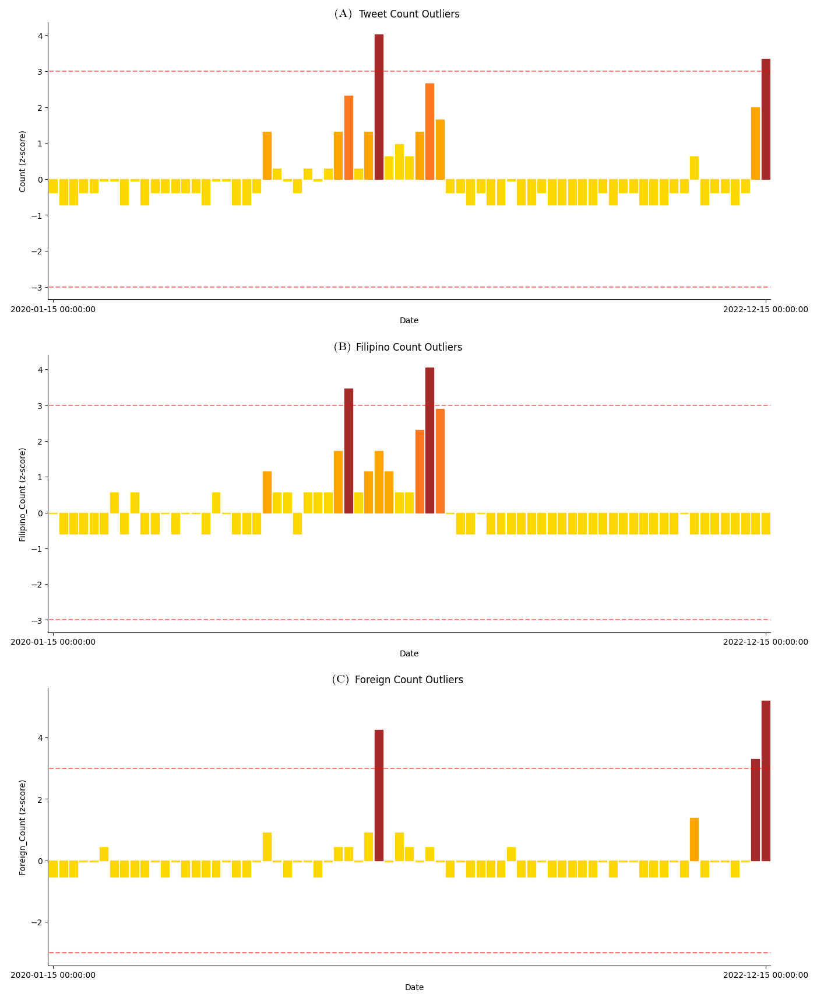
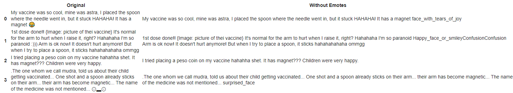
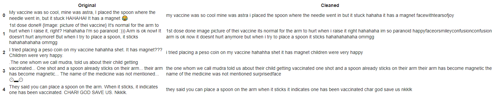
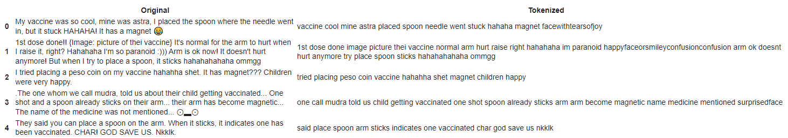
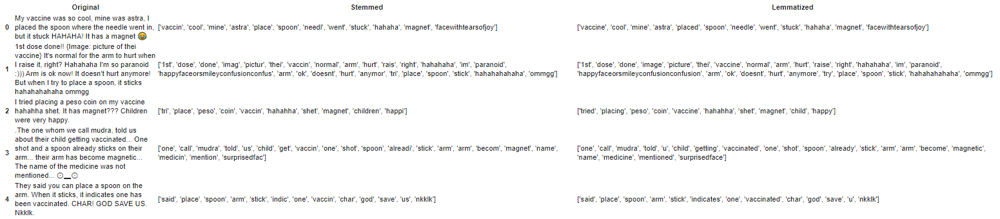

Here's our preprocessed data and its visualization.
We have divided the data exploration stage into 4 subsections, namely Preprocessing for Clean Data, Time Series Analysis, Natural Language Processing, and Categorical Data Encoding. Preprocessing for Clean Data guarantees that the dataset handles clean data only. In this stage, the sheet is processed to only contain correct, complete, and unique data.
Time Series Analysis is a useful approach for our first research question. This aids in analyzing what events triggered the spread of harmful tweets. For the second research question, Natural Language Processing is necessary in performing topic analysis and in identifying the most frequently mentioned implants. Finally, content type and thread language features are required to be processed via Categorical Data Encoding as preparation for answering our third research question.
1 - Preprocessing for Clean Data
In the preprocessing stage, we have performed different techniques to ensure that the project would involve only clean data. You may refer to this Preprocessing and Data Encoding document to see how we handled the data.
Handling Missing Values
Initially, the dataset had 35 features which included columns with missing values and dirty values. Upon checking for missing values, the features with missing values are Account Bio, Location, Screenshot, etc. All these features are dropped along with the some features deemed unnecessary for the project. The 15 retained features with no missing values are ['ID', 'Timestamp', 'Tweet URL', 'Group', 'Keywords', 'Account handle', 'Account name', 'Account bio', 'Account type', 'Tweet', 'Tweet Translated', 'Tweet Type', 'Date posted', 'Content type', 'Reasoning', 'Thread/Tweet Language'].
Handling Outliers

Figure 1: Screenshot of a generated CSV file during Tweet Scraping
The screenshot of a raw CSV file of scraped tweets is shown in Figure 1. In particular, the scraping tool generated this file on 28th March 2023 using keywords "bakuna" and "laman". These scraped tweets, however, has gathered multiple outliers that is not suitable for the topic. Hence, the team manually removed the outliers so that the dataset would only involve relevant and fact-checkable tweets. There are other checks and criteria that the collectors observed when handling outliers. The general discussion of scraping and filtering of tweets are explored thoroughly in the Data Collection section of this portfolio.
Ensuring Formatting Consistency
In the document, consistency in formatting of date features and categorical features were observed. For the Timestamp and the Date posted features, we ensured that the data type is datetime. By default, the format of datetime in Pandas is YYYY-MM-DD HH:MM:SS. The team also observed consistency in labels of categorical features. For Account type, we ensured that the values can only be Anonymous, Identified, or Media and are case sensitive. For Content type, values should be Emotional, Rational, or Transactional and are case sensitive. For Language, values are guaranteed to be Filipino, or Foreign and are case sensitive
Translating Tweets - Standardization
The screenshot of the first eight Tweets and their Translations is shown in Figure 2. For translating tweets, the team used Google translator to obtain raw English translation of all Filipino tweets. Then, we manually checked all results and adjusted some translations for better accuracy. For Foreign tweets, the contents in the Tweet column were copied into the Tweet translation column since all Foreign tweets gathered are already in English. Translating tweets are considered standardization since internal consistency in terms language are insured. This process is needed for the Natural Language Processing section. The team also performed other normalization and standardization techniques in the Time Series Analysis section.

Figure 2: First 8 Tweets and their Translations in the Dataset
2 - Time Series Analysis
For the time series analysis, we first performed feature generation to create the necessary features to represent our data. Then, the methods peformed on the time series data are binning and interpolation. This Time Series Analysis document contains the preprocessing procedures and visualizations for our time series data.
Feature Generation
The team intends to observe what timeframes have high frequencies of posted tweets. This will help determine what events triggered the spread of tweets containing misinfo/disinfo. To fulfill this, we created new a feature named Count as part of time series data. Count is the number of tweets posted in a certain time or time range. From Count and Language features, we generated two more features: Filipino_Count and Foreign_Count. Filipino_Count is the number of Filipino tweets posted given a certain time or time range. Foreign_Count is the number of Foreign tweets posted given a certain time or time range.
Binning
Figure 3: Semimonthly Binning of Time Series Data
To organize our time series data, the group performed data binning on the newly generated features. The binning technique employed is via grouping. The features are grouped as sum of Count, Filipino_Count, or Foreign_Count corresponding to its columns in a semimonthly manner as shown in Figure 3. For further details about the binned data, it has 71 rows which implies having 71 semimonthly timeranges obtained from 15 January 2021 to 31 December 2023.
Interpolation
Figure 4: Interpolation of the Time Series Data (Hourly)
Since our time-series data has in semimonthly binning, resampling the data by decreasing the period length would result to missing values. The team resampled the data by adjusting the period length from semimonthly to hourly. We also have increased the rows from 71 to 25561. To fill in the missing values on the newly resampled table, we performed cubic spline interpolation with K=3. Shown in Figure 4 is a table of the interpolated time series data of of Count, Filipino_Count, and Foreign_Count. This interpolation is an approximate of the frequencies of misinfo/disinfo Tweets being posted every hour from 15 January 2021 to 31 December 2023.
Line Graph - Time Series
To visualize our binned data and interpolated data, line graphs were generated to display the differences among Count, Filipino_Count, and Foreign_Count features accross time. The first line graph displays the original time series data which records the tweet frequency in a semimonthly interval. The second line graph displays the interpolated data that records tweet frequency in an hourly manner.
Figure 5: (A) Line Graph of Time Series Data with Semimonthly Binning, and (B) Line Graph of Interpolated Time Series Data in Hours
Notice that the interpolated graph has smoother plot since we have provided estimated values that increased the number of data points. We can also observe the following trends for Count, Filipino_Count, and Foreign_Count features:
All tweets considered, many tweets were posted on the second half of May 2021.
For Filipino Tweets, many tweets were posted on the first half of August 2021.
For Foreign Tweets, many tweets were posted on the second half of December 2022.
Normalization and Standardization
First, we looked into the mean and standard deviation of Count, Filipino_Count, and Foreign_Count features. When all samples are considered in our dataset, approximately two tweets relevant to our topic are being posted semimonthly on average. Filipino_Count has narrower spread than Foreign_Count. When combined, we obtained a wider spread.
Then, we standardized our time series data by obtaining the Z-scores of all data points. Upon standardizing the data, we could observe the following: (1) there are two outliers in Count; (2) there are two outliers in Filipino_Count; and (3) there are three outliers in Foreign_Count. Shown below in Figure 6 are the visualizations of our standardized data to easily identify the outliers per feature.
Figure 6: (A) Distribution for Standardized Count Feature, (B) Distribution for Standardized Filpino_Count Feature, and (C) Distribution for Standardized Foreign_Count Feature
3 - Natural Language Processing
For Natural Language Processing, we based it off from the preprocessing guide provided in this Python Notebook by Sir Regonia. which uses Natural Language Toolkit. Since our data is in text form, we started with data cleaning by removing emoticons/emojis and converting all characters to lower case. Then, tokenization is done to break complex tweets into more manageable/explorable data. Stop words are also removed to eliminate commonly occurrings English words. Lastly, stemming and lemmatization is done to reduce each word to their base form and ensure it is a valid word. To represent our analysis, we used a bar graph to represent the frequency of certain types of implants over our whole dataset.
Cleaning
First, each user's tweets is cleaned by removing emojis/emoticons, and handling certain special text faces. This is done by replacing every emoji and special text face in our dataset into a text or keyword representing it, such as transforming 🥴 into "woozy_face".
Figure 7: Handling emojis/emoticons and special text
Lower Casing
Next, each character in every word in every tweet is lowercased. This is to ensure case-insensitive matching later on once we tally the frequency of each kind of implant or foreign substance a user mentions the COVID-19 vaccine has. Moreoever, punctuations are also removed.
Figure 8: Lowercasing and punctuation removal
Tokenization and Stop Words Removal
Each tweet is then tokenized, and English stop words are removed. This is to remove commonly occurring words in a tweet, which further cleans our dataset by ensuring that only words which have weight or impact during analysis are kept. Through this procedure, our analysis is restricted only to meaningful and informative words that contribute to the overall context and understanding of our project.
Figure 9: Tokenization and Stop Words removal
Stemming and Lemmatization
Stemming and lemmatization are also applied to improve keyword frequency analysis which will be used later on once we generate our bar graph for feature comparison. Stemming helps by normalizing words, and lemmatization helps in producing meaningful base forms of each word. This also helps in reducing word or frequency noise by consolidating similar word variations into a single base form.
Figure 10: Stemming and Lemmatization
Bar Graph - Feature Comparison
Lastly, to gain some insight on our dataset, we opted to count the frequency of different kinds of implants or foreign substances users tweet the COVID-19 might have in their tweet. Also note that we opted to explore in analyzing our lemmatized dataset. We separated kinds of implants and foreign substances into five (5) kinds: Magnet, Microchip, Water, Toxin, and Others. Each category and their associated keywords are detailed below:
Magnet: "magnet", "magnetized", "magnetic", "magnetizes", "spoon", "coin", "fridge", "refrigerator", "shock", "electric", "electrical", "metal"
Microchip: "microchip", "micro", "chip", "simcard", "sim", "card", "5g", "track", "tracking", "bluetooth"
Water: "water", "canal", "aquafina", "aqua", "tap", "flood"
Toxin: "poison", "ccpvirus", "toxin"
Others: "salt", "saline", "monosodium", "nanoparticles", "sugar"
Figure 11: Bar Graph for Feature Comparison
Figure 11 displays the frequency each category has over our whole dataset. From this, we can gather that most users tweet that the COVID-19 vaccine has a Microchip implant. Second, users tweet that the COVID-19 vaccine makes them magnetic. And third, tweets claims that the COVID-19 vaccine is fake and it only contains water. You may view our NLP preprocessing and data exploration more in our NLP Python Notebook.
4 - Categorical Data Encoding
For categorical data encoding, we used one hot encoding technique to convert categorical data into numerical values. The team needed to transform these features to easily observe whether there is a difference between the content type of Philippine-based and Foreign-based tweets. One Hot Encoding is the chosen method since these features are nominal which lack inherent order. You may refer to the Preprocessing and Data Encoding document for this section.
One Hot Encoding

Figure 12: (A) One Hot Encoded Account type, (B) One Hot Encoded Content type, and (C) One Hot Encoded Language feature
Shown in Figure 12 are the one hot encoded features. For each category of a feature, a new binary feature is created. The first feature we have implemented one hot encoding is for the Account type. Figure 12-A shows the encoded table for these labels. Another feature that needs data encoding is Content type. Figure 12-B shows the encoded table for these categories. Lastly, we also employed encoding on Thread/Tweet Language. Figure 12-C shows the encoded table for this feature. Note that 0 represents the absence and 1 represents the presence of that categorical value.
Heat Map - Feature Correlation
Figure 13: Content type and Language feature Correlation
In the third research question of the project, we are looking for the difference in terms of content type between Filipino and Foreign misinformed tweets about COVID-19 vaccine implants. To explore this matter, the team visualized the correlation of the content type categories and the language feature categories using the Heat Map - Feature Correlation as shown in Figure 13. First, the visualization is achieved by merging the encoded tables of the Content type and the Thread/Tweet Language features. Then, we let Pandas tool process the merged table and create the plot.
From the Heat Map - Feature Correlation, the team arrived with the following observations to help understand our dataset:
there is a moderate positive correlation between Emotional tweets and Filipino tweets, with a value of 0.34
there is a moderate positive correlation between Rational tweets and Foreign tweets, with a value of 0.33
there is a moderate negative correlation between Emotional tweets and Foreign tweets, with a value of -0.34
there is a moderate negative correlation between Rational tweets and Filipino tweets, with a value of -0.33
the Transactional tweets have weak linear relationships among all other categories